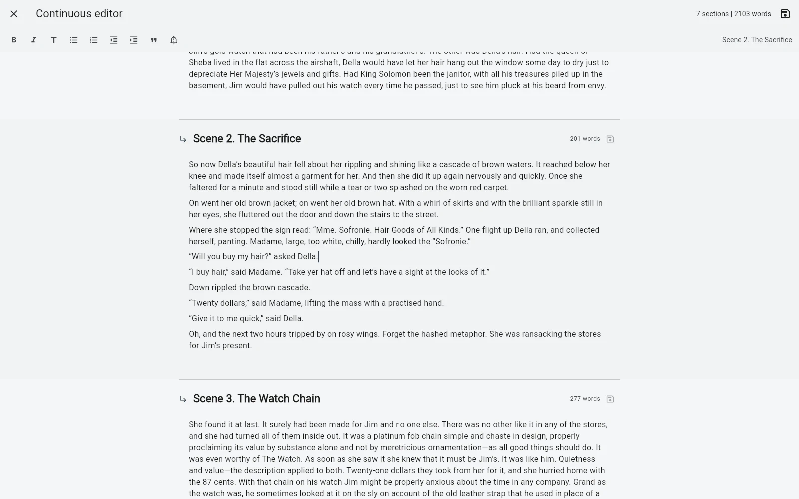

A chapter tree is excellent for navigation, but a reader never experiences your book as a tree. At some point you need to read several sections as one continuous piece.
Writing and reading need different scales
When you are drafting Chapter 6, you usually want Chapter 6. The smaller surface reduces distraction and gives that piece of the manuscript a clear boundary.
But revision asks different questions. Does Chapter 6 arrive too quickly after Chapter 5? Does the argument repeat something from twenty pages earlier? Does a scene feel abrupt only because the transition before it is weak? Those problems are much harder to see one isolated section at a time.
The structure should not disappear just because you want continuity
A common workaround is to export the manuscript to one large document and read it there. That gives continuity, but now you have created another artifact: one file for the real project and another for the reading pass.
B-Maker takes a different approach. The full-manuscript editor shows chapters and nested sections as one continuous scroll while the underlying sections remain separate project elements.
assets/img/bmaker/bmaker-story-manuscript-01.webpEdit in context without flattening the book
The useful part is not only seeing the whole text. Each section still saves independently in its current version. You can work through a long reading pass without turning the project into one giant document.
This matters when the book has real internal structure: chapters, nested sections, working parts that may later move, and revisions that should remain attached to the right section.
Use the small view when you need concentration
The continuous editor is not meant to replace focused chapter editing. Switch back to a single section when the task becomes local: rewrite a paragraph, finish a scene, restructure an argument, or work with a particular revision.
The same editor can support formatted text, lists, quotes, important blocks and images, while focus mode, split view and visual preview are available when the task calls for them.
Use the large view when you need rhythm
Open the manuscript as a whole when you want to inspect pacing, transitions, repetition, chapter balance or simply experience the text closer to the way a reader will.
This is a small distinction in interface design but an important one in writing: the unit you edit does not have to be the unit you read.

The result: structure without fragmentation
A long-form writing tool has to solve two opposite problems. It must split a large project into manageable pieces, and it must also let the author forget those pieces when the book needs to be read as a whole.
B-Maker keeps both views over the same manuscript. No temporary merged file is required just to understand the flow of your own book.
Related stories
One manuscript, several views · No more final-final.docx · What should writing software check before you publish?
Write small. Read large.
Open one chapter when you need focus. Open the manuscript when you need to see what the reader will feel.